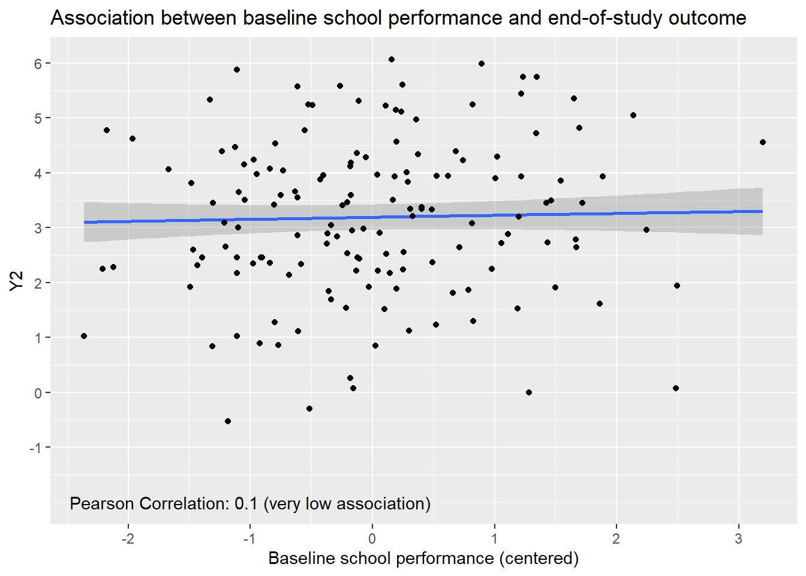

estimate <- function(fit, combos) {
# -- Details about function inputs
# fit:
# must be of class 'geem' (obtained from geeM package)
# combos:
# must be of class 'matrix'
# specifies linear combinations of parameter estimates
# -- Compute the mean estimate
est <- combos %*% as.matrix(fit$beta)
# -- Get the appropriate variance estimate
var <- fit$var
# -- Compute standard error of mean estimate and confidence bounds
se.est <- sqrt(diag(combos %*% var %*% t(combos)))
lcl <- est - se.est * qnorm(0.975)
ucl <- est + se.est * qnorm(0.975)
# -- Perform a 1-degree-of-freedom Wald test on the estimate
pvalue <- 1 - pchisq((est/se.est)^2, df = 1)
# -- Combine and format output
out <- cbind(est, lcl, ucl, se.est, pvalue)
rownames(out) <- rownames(combos)
colnames(out) <- c("Estimate", "95% LCL", "95% UCL", "SE", "p-value")
out <- round(out, 2)
# -- Output is a rough equivalent of SAS PROC GENMOD's ESTIMATE statement
return(out)
}Data Analysis / HELPER FUNCTIONS
Data Analysis / DEMO WORKFLOW
Load data and understand relationships between variables in the dataset
# -- Load package for plotting
library(ggplot2)
# -- Load package for data cleaning
library(dplyr)
# -- Load package containing simulated data and documentation
library(CATIE2023)
dat_smart <- CATIE2023::adhd
# -- Baseline covariates need to be centered to facilitate interpretability
# of models should we choose to specify a model that adjusts for
# baseline covariates
#
# -- Create centered baseline covariates here.
# severity is already centered, according to the documentation.
# So, we just need to rename to reflect the fact that it's already centered.
# priormed, race, and Y0 have not yet been centered.
# We suffix the names of the centered variables by "_c".
dat_smart <- dat_smart %>%
rename(severity_c = severity) %>%
mutate(priormed_c = priormed - mean(priormed),
odd_c = odd - mean(odd),
race_c = race - mean(race),
Y0_c = Y0 - mean(Y0))Explore association between binary baseline covariate and continuous end-of-study outcome
u <- cor(dat_smart$priormed, dat_smart$Y2)
u <- round(u, 2)
mean_by_group <- dat_smart %>% group_by(priormed) %>% summarise(mY2 = mean(Y2))
mY2 <- mean_by_group[["mY2"]]
mY2 <- round(mY2, 2)
g <- ggplot(data = dat_smart, mapping = aes(x = factor(priormed), y = Y2))
g <- g + scale_x_discrete(breaks = c(0,1), labels = c("no", "yes"))
g <- g + ylim(-2,7) + scale_y_continuous(breaks = c(-1,0,1,2,3,4,5,6,7))
g <- g + labs(x = "Whether the child received medication prior to first-stage intervention", y = "Y2")
g <- g + labs(title = "Association between prior medication and end-of-study outcome")
g <- g + geom_violin() + geom_point()
g <- g + annotate("segment", x = 0.75, xend = 1.25, y = mY2[1], yend = mY2[1], colour = "brown",linewidth = 2)
g <- g + annotate("segment", x = 1.75, xend = 2.25, y = mY2[2], yend = mY2[2], colour = "brown", linewidth = 2)
g <- g + annotate("text", x = 1.25, y = mY2[1] - 0.25, label = paste("overall mean: ", mY2[1], sep=""), colour = "brown", size = 3)
g <- g + annotate("text", x = 1.75, y = mY2[2] - 0.25, label = paste("overall mean: ", mY2[2], sep=""), colour = "brown", size = 3)
g <- g + annotate("text", x = 1, y = -2, label = paste("Pearson Correlation:", u, "(very low association)", sep = " "))
# Reveal plot
gExplore association between continuous baseline covariate and continuous end-of-study outcome
u <- cor(dat_smart$severity_c, dat_smart$Y2)
u <- round(u, 2)
g <- ggplot(data = dat_smart, mapping = aes(x = severity_c, y = Y2))
g <- g + xlim(-3,3) + scale_x_continuous(breaks = c(-3,-2,-1,0,1,2,3))
g <- g + ylim(-2,7) + scale_y_continuous(breaks = c(-1,0,1,2,3,4,5,6,7))
g <- g + labs(x = "Baseline severity (centered)", y = "Y2")
g <- g + labs(title = "Association between baseline severity and end-of-study outcome")
g <- g + geom_smooth(method = "gam") + geom_point()
g <- g + annotate("text", x = -1, y = -2, label = paste("Pearson Correlation:", u, "(moderate association)", sep = " "))
# Reveal plot
gu <- cor(dat_smart$Y0_c, dat_smart$Y2)
u <- round(u, 2)
g <- ggplot(data = dat_smart, mapping = aes(x = Y0_c, y = Y2))
g <- g + xlim(-3,3) + scale_x_continuous(breaks = c(-3,-2,-1,0,1,2,3))
g <- g + ylim(-2,7) + scale_y_continuous(breaks = c(-1,0,1,2,3,4,5,6,7))
g <- g + labs(x = "Baseline school performance (centered)", y = "Y2")
g <- g + labs(title = "Association between baseline school performance and end-of-study outcome")
g <- g + geom_smooth(method = "gam") + geom_point()
g <- g + annotate("text", x = -1, y = -2, label = paste("Pearson Correlation:", u, "(very low association)", sep = " "))
# Reveal plot
g
Marginal Model, without adjustment for baseline covariates
# -- Load package for data cleaning
library(dplyr)
# -- Load package for estimating model parameters and obtaining robust SE's
library(geeM)
# -- Step 1: Create weights
dat_smart <- dat_smart %>% mutate(design_weights = 2*R + 4*(1-R))
# -- Step 2: Replicate data from responders
rows_not_to_replicate <- dat_smart %>% filter(R==0)
rows_to_replicate <- dat_smart %>% filter(R==1)
plus_one_pseudodata <- rows_to_replicate %>% mutate(A2 = +1)
minus_one_pseudodata <- rows_to_replicate %>% mutate(A2 = -1)
dat_smart_replicated <- rbind(rows_not_to_replicate,
plus_one_pseudodata,
minus_one_pseudodata)
dat_smart_replicated <- dat_smart_replicated %>% arrange(desc(R), ID, A1, A2)
# -- Step 3: Estimate parameters of our model for the mean of the
# end-of-study outcome
model <- geem(Y2 ~ A1 + A2 + I(A1*A2),
id = ID,
corstr = "independence",
data = dat_smart_replicated,
weights = design_weights)
summary(model) Estimates Model SE Robust SE wald p
(Intercept) 3.35300 0.1 0.13160 25.4800 0.00000
A1 0.31780 0.1 0.13160 2.4150 0.01574
A2 -0.06937 0.1 0.07092 -0.9781 0.32800
I(A1 * A2) -0.03139 0.1 0.07092 -0.4425 0.65810
Estimated Correlation Parameter: 0
Correlation Structure: independence
Est. Scale Parameter: 5.987
Number of GEE iterations: 2
Number of Clusters: 150 Maximum Cluster Size: 2
Number of observations with nonzero weight: 208 # -- Step 4: Estimate end-of-study outcome means under each AI
# and pairwise differences
L <- rbind(
# -- These statements get the end-of-study outcome mean under each AI
"End-of-study mean: AI#1 (MED, AUGMENT)" = c(1, -1, -1, 1),
"End-of-study mean: AI#2 (BMOD, AUGMENT)" = c(1, 1, -1, -1),
"End-of-study mean: AI#3 (MED, INTENSIFY)" = c(1, -1, 1, -1),
"End-of-study mean: AI#4 (BMOD, INTENSIFY)" = c(1, 1, 1, 1),
# -- These statements are to get all pairwise differences
"Between groups diff: AI#1 - AI#2" = c(0, -2, 0, 2),
"Between groups diff: AI#1 - AI#3" = c(0, 0, -2, 2),
"Between groups diff: AI#1 - AI#4" = c(0, -2, -2, 0),
"Between groups diff: AI#2 - AI#3" = c(0, 2, -2, 0),
"Between groups diff: AI#2 - AI#4" = c(0, 0, -2, -2),
"Between groups diff: AI#3 - AI#4" = c(0, -2, 0, -2)
)
est_contrasts <- estimate(fit = model, combos = L)
print(est_contrasts) Estimate 95% LCL 95% UCL SE p-value
End-of-study mean: AI#1 (MED, AUGMENT) 3.07 2.65 3.49 0.21 0.00
End-of-study mean: AI#2 (BMOD, AUGMENT) 3.77 3.38 4.16 0.20 0.00
End-of-study mean: AI#3 (MED, INTENSIFY) 3.00 2.54 3.45 0.23 0.00
End-of-study mean: AI#4 (BMOD, INTENSIFY) 3.57 3.18 3.96 0.20 0.00
Between groups diff: AI#1 - AI#2 -0.70 -1.27 -0.13 0.29 0.02
Between groups diff: AI#1 - AI#3 0.08 -0.27 0.42 0.18 0.67
Between groups diff: AI#1 - AI#4 -0.50 -1.07 0.08 0.29 0.09
Between groups diff: AI#2 - AI#3 0.77 0.18 1.37 0.30 0.01
Between groups diff: AI#2 - AI#4 0.20 -0.23 0.64 0.22 0.36
Between groups diff: AI#3 - AI#4 -0.57 -1.17 0.03 0.31 0.06Marginal Model, with adjustment for baseline covariates
Adjustment using a baseline covariate having very low association with end-of-study outcome
# -- Load package for data cleaning
library(dplyr)
# -- Load package for estimating model parameters and obtaining robust SE's
library(geeM)
# -- Step 1: Create weights
dat_smart <- dat_smart %>% mutate(design_weights = 2*R + 4*(1-R))
# -- Step 2: Replicate data from responders
rows_not_to_replicate <- dat_smart %>% filter(R==0)
rows_to_replicate <- dat_smart %>% filter(R==1)
plus_one_pseudodata <- rows_to_replicate %>% mutate(A2 = +1)
minus_one_pseudodata <- rows_to_replicate %>% mutate(A2 = -1)
dat_smart_replicated <- rbind(rows_not_to_replicate,
plus_one_pseudodata,
minus_one_pseudodata)
dat_smart_replicated <- dat_smart_replicated %>% arrange(desc(R), ID, A1, A2)
# -- Step 3: Estimate parameters of our model for the mean of the
# end-of-study outcome
model_with_baseline <- geem(Y2 ~ priormed_c + A1 + A2 + I(A1*A2),
id = ID,
corstr = "independence",
data = dat_smart_replicated,
weights = design_weights)
summary(model_with_baseline) Estimates Model SE Robust SE wald p
(Intercept) 3.35300 0.1001 0.13180 25.4500 0.00000
priormed_c -0.14740 0.2214 0.31630 -0.4659 0.64130
A1 0.32330 0.1005 0.13260 2.4380 0.01478
A2 -0.06988 0.1001 0.07039 -0.9928 0.32080
I(A1 * A2) -0.03428 0.1002 0.07094 -0.4833 0.62890
Estimated Correlation Parameter: 0
Correlation Structure: independence
Est. Scale Parameter: 6.003
Number of GEE iterations: 2
Number of Clusters: 150 Maximum Cluster Size: 2
Number of observations with nonzero weight: 208 # -- Step 4: Estimate end-of-study outcome means under each AI
# and pairwise differences
L_with_baseline <- rbind(
# -- These statements get the end-of-study outcome mean under each AI
"End-of-study mean: AI#1 (MED, AUGMENT)" = c(1, 0, -1, -1, 1),
"End-of-study mean: AI#2 (BMOD, AUGMENT)" = c(1, 0, 1, -1, -1),
"End-of-study mean: AI#3 (MED, INTENSIFY)" = c(1, 0, -1, 1, -1),
"End-of-study mean: AI#4 (BMOD, INTENSIFY)" = c(1, 0, 1, 1, 1),
# -- These statements are to get all pairwise differences
"Diff: AI#1 - AI#2" = c(0, 0, -2, 0, 2),
"Diff: AI#1 - AI#3" = c(0, 0, 0, -2, 2),
"Diff: AI#1 - AI#4" = c(0, 0, -2, -2, 0),
"Diff: AI#2 - AI#3" = c(0, 0, 2, -2, 0),
"Diff: AI#2 - AI#4" = c(0, 0, 0, -2, -2),
"Diff: AI#3 - AI#4" = c(0, 0, -2, 0, -2)
)
est_contrasts_BL <- estimate(fit = model_with_baseline, combos = L_with_baseline)
print(est_contrasts_BL) Estimate 95% LCL 95% UCL SE p-value
End-of-study mean: AI#1 (MED, AUGMENT) 3.07 2.63 3.50 0.22 0.00
End-of-study mean: AI#2 (BMOD, AUGMENT) 3.78 3.40 4.16 0.19 0.00
End-of-study mean: AI#3 (MED, INTENSIFY) 2.99 2.53 3.46 0.24 0.00
End-of-study mean: AI#4 (BMOD, INTENSIFY) 3.57 3.19 3.95 0.19 0.00
Diff: AI#1 - AI#2 -0.72 -1.30 -0.13 0.30 0.02
Diff: AI#1 - AI#3 0.07 -0.28 0.42 0.18 0.69
Diff: AI#1 - AI#4 -0.51 -1.08 0.07 0.29 0.08
Diff: AI#2 - AI#3 0.79 0.19 1.39 0.31 0.01
Diff: AI#2 - AI#4 0.21 -0.22 0.64 0.22 0.34
Diff: AI#3 - AI#4 -0.58 -1.18 0.02 0.31 0.06# -- The next line is only necessary because we would like to plot
# estimates from the three analyses side-by-side
est_contrasts_BL1 <- est_contrasts_BLAdjustment using a baseline covariate having moderate association with end-of-study outcome
# -- Load package for data cleaning
library(dplyr)
# -- Load package for estimating model parameters and obtaining robust SE's
library(geeM)
# -- Step 1: Create weights
dat_smart <- dat_smart %>% mutate(design_weights = 2*R + 4*(1-R))
# -- Step 2: Replicate data from responders
rows_not_to_replicate <- dat_smart %>% filter(R==0)
rows_to_replicate <- dat_smart %>% filter(R==1)
plus_one_pseudodata <- rows_to_replicate %>% mutate(A2 = +1)
minus_one_pseudodata <- rows_to_replicate %>% mutate(A2 = -1)
dat_smart_replicated <- rbind(rows_not_to_replicate,
plus_one_pseudodata,
minus_one_pseudodata)
dat_smart_replicated <- dat_smart_replicated %>% arrange(desc(R), ID, A1, A2)
# -- Step 3: Estimate parameters of our model for the mean of the
# end-of-study outcome
model_with_baseline <- geem(Y2 ~ severity_c + A1 + A2 + I(A1*A2),
id = ID,
corstr = "independence",
data = dat_smart_replicated,
weights = design_weights)
summary(model_with_baseline) Estimates Model SE Robust SE wald p
(Intercept) 3.35400 0.09770 0.12830 26.1500 0.000000
severity_c -0.33050 0.10070 0.13120 -2.5190 0.011780
A1 0.34710 0.09810 0.12880 2.6950 0.007033
A2 -0.09084 0.09792 0.06859 -1.3240 0.185400
I(A1 * A2) -0.04928 0.09785 0.06897 -0.7145 0.474900
Estimated Correlation Parameter: 0
Correlation Structure: independence
Est. Scale Parameter: 5.714
Number of GEE iterations: 2
Number of Clusters: 150 Maximum Cluster Size: 2
Number of observations with nonzero weight: 208 # -- Step 4: Estimate end-of-study outcome means under each AI
# and pairwise differences
L_with_baseline <- rbind(
# -- These statements get the end-of-study outcome mean under each AI
"End-of-study mean: AI#1 (MED, AUGMENT)" = c(1, 0, -1, -1, 1),
"End-of-study mean: AI#2 (BMOD, AUGMENT)" = c(1, 0, 1, -1, -1),
"End-of-study mean: AI#3 (MED, INTENSIFY)" = c(1, 0, -1, 1, -1),
"End-of-study mean: AI#4 (BMOD, INTENSIFY)" = c(1, 0, 1, 1, 1),
# -- These statements are to get all pairwise differences
"Diff: AI#1 - AI#2" = c(0, 0, -2, 0, 2),
"Diff: AI#1 - AI#3" = c(0, 0, 0, -2, 2),
"Diff: AI#1 - AI#4" = c(0, 0, -2, -2, 0),
"Diff: AI#2 - AI#3" = c(0, 0, 2, -2, 0),
"Diff: AI#2 - AI#4" = c(0, 0, 0, -2, -2),
"Diff: AI#3 - AI#4" = c(0, 0, -2, 0, -2)
)
est_contrasts_BL <- estimate(fit = model_with_baseline, combos = L_with_baseline)
print(est_contrasts_BL) Estimate 95% LCL 95% UCL SE p-value
End-of-study mean: AI#1 (MED, AUGMENT) 3.05 2.65 3.45 0.20 0.00
End-of-study mean: AI#2 (BMOD, AUGMENT) 3.84 3.46 4.22 0.20 0.00
End-of-study mean: AI#3 (MED, INTENSIFY) 2.97 2.52 3.41 0.23 0.00
End-of-study mean: AI#4 (BMOD, INTENSIFY) 3.56 3.17 3.95 0.20 0.00
Diff: AI#1 - AI#2 -0.79 -1.35 -0.23 0.29 0.01
Diff: AI#1 - AI#3 0.08 -0.25 0.42 0.17 0.63
Diff: AI#1 - AI#4 -0.51 -1.07 0.04 0.28 0.07
Diff: AI#2 - AI#3 0.88 0.29 1.46 0.30 0.00
Diff: AI#2 - AI#4 0.28 -0.14 0.70 0.21 0.19
Diff: AI#3 - AI#4 -0.60 -1.18 -0.01 0.30 0.05# -- The next line is only necessary because we would like to plot
# estimates from the three analyses side-by-side
est_contrasts_BL2 <- est_contrasts_BLCompare estimates and confidence limits across all models
# -- Note: The following code snippet employs advanced R coding concepts;
# you may focus on the meaning of the output plot, rather than the
# specifics of the code itself, without losing understanding of
# the basic workflow
# -- Convert matrix into data frame because ggplot does not permit matrix inputs
dat_plot <- data.frame(est_contrasts)
dat_plot_bl1 <- data.frame(est_contrasts_BL1)
dat_plot_bl2 <- data.frame(est_contrasts_BL2)
# -- We strongly prefer using syntactic names for data frames
colnames(dat_plot) <- c("estimate", "lower", "upper", "stderr", "pval")
dat_plot[["contrast_labels"]] <- row.names(dat_plot)
row.names(dat_plot) <- NULL
colnames(dat_plot_bl1) <- c("estimate", "lower", "upper", "stderr", "pval")
dat_plot_bl1[["contrast_labels"]] <- row.names(dat_plot_bl1)
row.names(dat_plot_bl1) <- NULL
colnames(dat_plot_bl2) <- c("estimate", "lower", "upper", "stderr", "pval")
dat_plot_bl2[["contrast_labels"]] <- row.names(dat_plot_bl2)
row.names(dat_plot_bl2) <- NULL
# -- Grab only the rows you will plot
dat_plot <- dat_plot %>% filter(grepl(pattern = "End-of-study mean:", x = contrast_labels, fixed = TRUE))
dat_plot_bl1 <- dat_plot_bl1 %>% filter(grepl(pattern = "End-of-study mean:", x = contrast_labels, fixed = TRUE))
dat_plot_bl2 <- dat_plot_bl2 %>% filter(grepl(pattern = "End-of-study mean:", x = contrast_labels, fixed = TRUE))
# -- Start building a graph
g <- ggplot(data = dat_plot, mapping = aes(x = factor(contrast_labels), y = estimate))
g <- g + scale_y_continuous(limits = c(2,5), breaks = c(2,2.5,3,3.5,4,4.5,5))
g <- g + scale_x_continuous(breaks = c(1,2,3,4), labels = c("AI#1 (MED, AUGMENT)", "AI#2 (BMOD, AUGMENT)", "AI#3 (MED, INTENSIFY)", "AI#4 (BMOD, INTENSIFY)"))
g <- g + labs(x = "", y = "")
g <- g + labs(title = "End-of-study means and 95% CI's under each adaptive intervention", subtitle = "solid line: no adjustment for baseline covariates\ndashed line: with adjustment -- low association\ndotted line: with adjustment -- moderate association")
# -- No adjustment for baseline covariates
g <- g + annotate("pointrange", x = 1, y = dat_plot[["estimate"]][1], ymin = dat_plot[["lower"]][1], ymax = dat_plot[["upper"]][1], colour = "aquamarine3", linewidth = 2, linetype = 1)
g <- g + annotate("pointrange", x = 2, y = dat_plot[["estimate"]][2], ymin = dat_plot[["lower"]][2], ymax = dat_plot[["upper"]][2], colour = "coral", linewidth = 2, linetype = 1)
g <- g + annotate("pointrange", x = 3, y = dat_plot[["estimate"]][3], ymin = dat_plot[["lower"]][3], ymax = dat_plot[["upper"]][3], colour = "gold", linewidth = 2, linetype = 1)
g <- g + annotate("pointrange", x = 4, y = dat_plot[["estimate"]][4], ymin = dat_plot[["lower"]][4], ymax = dat_plot[["upper"]][4], colour = "slateblue2", linewidth = 2, linetype = 1)
g <- g + annotate("segment", x = 0.9, xend = 1.1, y = dat_plot[["upper"]][1], yend = dat_plot[["upper"]][1], colour = "aquamarine3", linewidth = 2, linetype = 1)
g <- g + annotate("segment", x = 1.9, xend = 2.1, y = dat_plot[["upper"]][2], yend = dat_plot[["upper"]][2], colour = "coral", linewidth = 2, linetype = 1)
g <- g + annotate("segment", x = 2.9, xend = 3.1, y = dat_plot[["upper"]][3], yend = dat_plot[["upper"]][3], colour = "gold", linewidth = 2, linetype = 1)
g <- g + annotate("segment", x = 3.9, xend = 4.1, y = dat_plot[["upper"]][4], yend = dat_plot[["upper"]][4], colour = "slateblue2", linewidth = 2, linetype = 1)
g <- g + annotate("segment", x = 0.9, xend = 1.1, y = dat_plot[["lower"]][1], yend = dat_plot[["lower"]][1], colour = "aquamarine3", linewidth = 2, linetype = 1)
g <- g + annotate("segment", x = 1.9, xend = 2.1, y = dat_plot[["lower"]][2], yend = dat_plot[["lower"]][2], colour = "coral", linewidth = 2, linetype = 1)
g <- g + annotate("segment", x = 2.9, xend = 3.1, y = dat_plot[["lower"]][3], yend = dat_plot[["lower"]][3], colour = "gold", linewidth = 2, linetype = 1)
g <- g + annotate("segment", x = 3.9, xend = 4.1, y = dat_plot[["lower"]][4], yend = dat_plot[["lower"]][4], colour = "slateblue2", linewidth = 2, linetype = 1)
g <- g + annotate("point", x = c(1, 2, 3, 4), y = dat_plot[["estimate"]], size = 8, colour = c("aquamarine3","coral","gold","slateblue2"))
# -- Adjust for baseline covariates
g <- g + annotate("pointrange", x = 1.2, y = dat_plot_bl1[["estimate"]][1], ymin = dat_plot_bl1[["lower"]][1], ymax = dat_plot_bl1[["upper"]][1], colour = "aquamarine3", linewidth = 2, linetype = 2)
g <- g + annotate("pointrange", x = 2.2, y = dat_plot_bl1[["estimate"]][2], ymin = dat_plot_bl1[["lower"]][2], ymax = dat_plot_bl1[["upper"]][2], colour = "coral", linewidth = 2, linetype = 2)
g <- g + annotate("pointrange", x = 3.2, y = dat_plot_bl1[["estimate"]][3], ymin = dat_plot_bl1[["lower"]][3], ymax = dat_plot_bl1[["upper"]][3], colour = "gold", linewidth = 2, linetype = 2)
g <- g + annotate("pointrange", x = 4.2, y = dat_plot_bl1[["estimate"]][4], ymin = dat_plot_bl1[["lower"]][4], ymax = dat_plot_bl1[["upper"]][4], colour = "slateblue2", linewidth = 2, linetype = 2)
g <- g + annotate("segment", x = 1.1, xend = 1.3, y = dat_plot_bl1[["upper"]][1], yend = dat_plot_bl1[["upper"]][1], colour = "aquamarine3", linewidth = 2, linetype = 1)
g <- g + annotate("segment", x = 2.1, xend = 2.3, y = dat_plot_bl1[["upper"]][2], yend = dat_plot_bl1[["upper"]][2], colour = "coral", linewidth = 2, linetype = 1)
g <- g + annotate("segment", x = 3.1, xend = 3.3, y = dat_plot_bl1[["upper"]][3], yend = dat_plot_bl1[["upper"]][3], colour = "gold", linewidth = 2, linetype = 1)
g <- g + annotate("segment", x = 4.1, xend = 4.3, y = dat_plot_bl1[["upper"]][4], yend = dat_plot_bl1[["upper"]][4], colour = "slateblue2", linewidth = 2, linetype = 1)
g <- g + annotate("segment", x = 1.1, xend = 1.3, y = dat_plot_bl1[["lower"]][1], yend = dat_plot_bl1[["lower"]][1], colour = "aquamarine3", linewidth = 2, linetype = 1)
g <- g + annotate("segment", x = 2.1, xend = 2.3, y = dat_plot_bl1[["lower"]][2], yend = dat_plot_bl1[["lower"]][2], colour = "coral", linewidth = 2, linetype = 1)
g <- g + annotate("segment", x = 3.1, xend = 3.3, y = dat_plot_bl1[["lower"]][3], yend = dat_plot_bl1[["lower"]][3], colour = "gold", linewidth = 2, linetype = 1)
g <- g + annotate("segment", x = 4.1, xend = 4.3, y = dat_plot_bl1[["lower"]][4], yend = dat_plot_bl1[["lower"]][4], colour = "slateblue2", linewidth = 2, linetype = 1)
g <- g + annotate("point", x = c(1.2, 2.2, 3.2, 4.2), y = dat_plot_bl1[["estimate"]], size = 8, colour = c("aquamarine3","coral","gold","slateblue2"))
# -- Adjust for baseline covariates
g <- g + annotate("pointrange", x = 1.4, y = dat_plot_bl2[["estimate"]][1], ymin = dat_plot_bl2[["lower"]][1], ymax = dat_plot_bl2[["upper"]][1], colour = "aquamarine3", linewidth = 2, linetype = 3)
g <- g + annotate("pointrange", x = 2.4, y = dat_plot_bl2[["estimate"]][2], ymin = dat_plot_bl2[["lower"]][2], ymax = dat_plot_bl2[["upper"]][2], colour = "coral", linewidth = 2, linetype = 3)
g <- g + annotate("pointrange", x = 3.4, y = dat_plot_bl2[["estimate"]][3], ymin = dat_plot_bl2[["lower"]][3], ymax = dat_plot_bl2[["upper"]][3], colour = "gold", linewidth = 2, linetype = 3)
g <- g + annotate("pointrange", x = 4.4, y = dat_plot_bl2[["estimate"]][4], ymin = dat_plot_bl2[["lower"]][4], ymax = dat_plot_bl2[["upper"]][4], colour = "slateblue2", linewidth = 2, linetype = 3)
g <- g + annotate("segment", x = 1.3, xend = 1.5, y = dat_plot_bl2[["upper"]][1], yend = dat_plot_bl2[["upper"]][1], colour = "aquamarine3", linewidth = 2, linetype = 1)
g <- g + annotate("segment", x = 2.3, xend = 2.5, y = dat_plot_bl2[["upper"]][2], yend = dat_plot_bl2[["upper"]][2], colour = "coral", linewidth = 2, linetype = 1)
g <- g + annotate("segment", x = 3.3, xend = 3.5, y = dat_plot_bl2[["upper"]][3], yend = dat_plot_bl2[["upper"]][3], colour = "gold", linewidth = 2, linetype = 1)
g <- g + annotate("segment", x = 4.3, xend = 4.5, y = dat_plot_bl2[["upper"]][4], yend = dat_plot_bl2[["upper"]][4], colour = "slateblue2", linewidth = 2, linetype = 1)
g <- g + annotate("segment", x = 1.3, xend = 1.5, y = dat_plot_bl2[["lower"]][1], yend = dat_plot_bl2[["lower"]][1], colour = "aquamarine3", linewidth = 2, linetype = 1)
g <- g + annotate("segment", x = 2.3, xend = 2.5, y = dat_plot_bl2[["lower"]][2], yend = dat_plot_bl2[["lower"]][2], colour = "coral", linewidth = 2, linetype = 1)
g <- g + annotate("segment", x = 3.3, xend = 3.5, y = dat_plot_bl2[["lower"]][3], yend = dat_plot_bl2[["lower"]][3], colour = "gold", linewidth = 2, linetype = 1)
g <- g + annotate("segment", x = 4.3, xend = 4.5, y = dat_plot_bl2[["lower"]][4], yend = dat_plot_bl2[["lower"]][4], colour = "slateblue2", linewidth = 2, linetype = 1)
g <- g + annotate("point", x = c(1.4, 2.4, 3.4, 4.4), y = dat_plot_bl2[["estimate"]], size = 8, colour = c("aquamarine3","coral","gold","slateblue2"))# -- Reveal plot
g